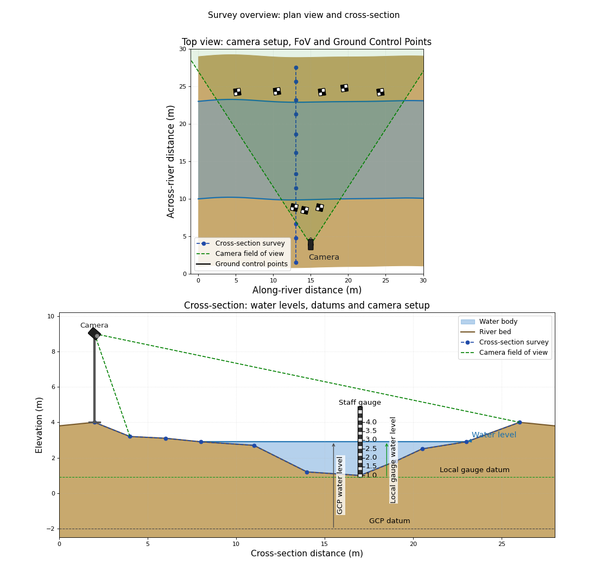
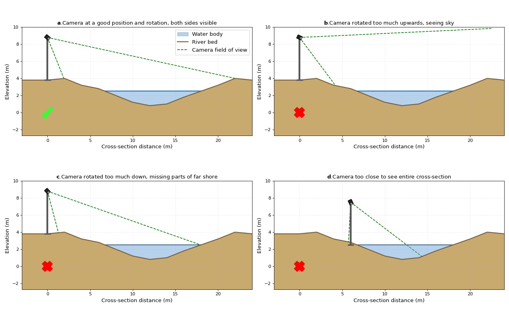
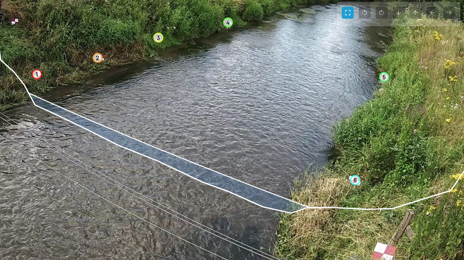
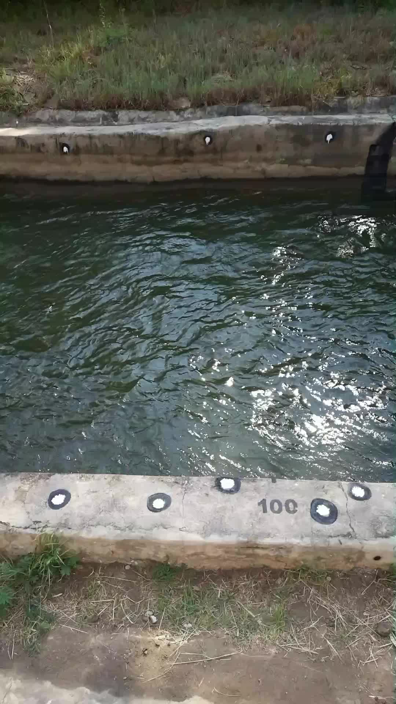
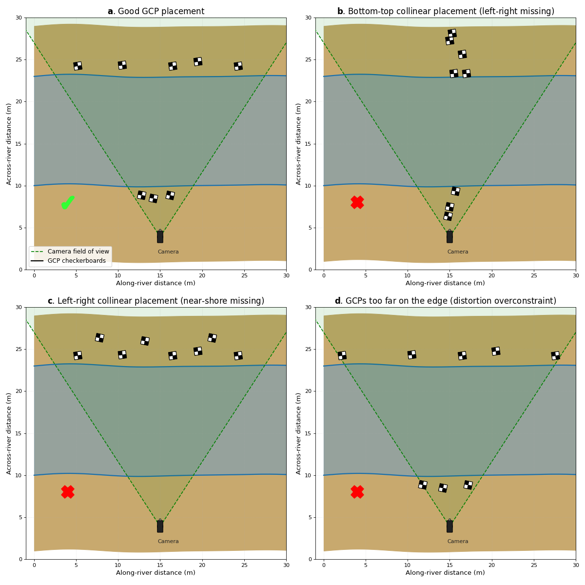
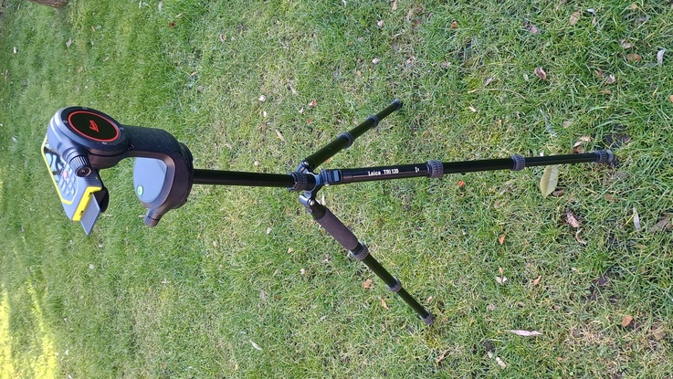
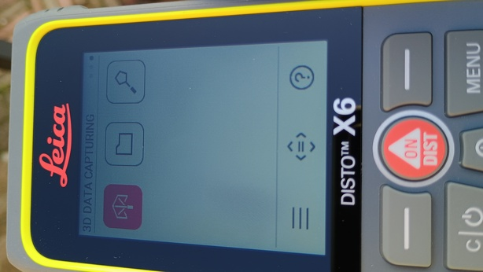
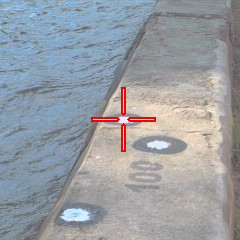
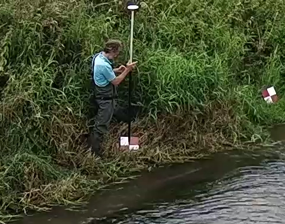

Field survey measurements#
Once a camera system is installed, several measurements are required in ORC-OS to enable processing of videos into velocities and river flow. All of the observations needed are in the form of 3D points. A schematic planar and sideview of the information obtained through the survey is provided in the image below. We highly recommend to carefully read this section before doing any installation, and do a dry-run of the entire survey procedure before going into the field if you have never done it before.
(Source code, png, hires.png, pdf)
{kind=link}
{kind=link}

Information collected through surveying.#
Important
It is crucial that all datasets described below are measured in exactly the same coordinate system. In some cases this means that you should survey everything in one survey project as your coordinate system may change if you start a new survey. This is particularly the case if you use a Leica disto P2P set and if you use an RTK GPS set with a base station with a very short survey in period. This gives good relative accuracy but not absolute. Do not switch off your base station during the entire survey.
Tip
If you do split the survey in smaller parts, make sure you measure at least two points again in the second survey, so that you can correct that x, y, z offset between the different survey parts afterwards. Always check your observations with some simple plots. This can be done for instance in Excel using scatter plots.
Requirement measurements#
The required measurements are given and described in the table below:
Data |
Reason for required data |
Tips |
|---|---|---|
Ground Control Points (GCPs) |
Needed to make the camera understand how pixels translate into meter distances in different parts of the field of view. It is also crucial that the camera understands what a horizontal plane is so that it can project a water surface (roughly following a horizontal plane over short distances) to a real meter x meter image. |
GCPs MUST be spread in a “non-collinear” way over the objective of the camera. This means points should not be on a straight line. They should be spread over left and right bank and from upstream to downstream. If you have not performed a calibration of the camera’s lens characteristics, then ORC-OS also uses GCPs to constrain lens characteristics. But for this to work, the points should cover a significant part of the entire field of view. Check for instance the example below, where points were spread such that both the close and far bank have a good spread. Obviously the points close to the camera are much closer together in real world, but this is totally fine and a very good spread over the objective. Points should also not be almost at the edge of the image. |
Cross section profile (bottom coordinates) |
Needed to estimate water depths with different occurring water levels, estimate the wetted cross sectional area and integrate velocity estimates (m/s) into river flow (m3/s). |
Record these perpendicular to the overall flow direction in an as straight line as possible. You may have to wade with an instrument on a stick (e.g. RTK GPS antenna, total station or a board with marker or checkerboard if you use a disto). Record as much as you can, even beyond what the camera can see (see note below). Record more points when the bottom is very variable. If the bottom is entirely straight, only measure the points of inflection and measure those carefully. |
Water level |
Needed to assess how the water level recorded with your survey equipment may relate to water levels recorded with an in-situ measurement device. Both will have a different vertical datum. |
Measure this by holding your survey device on the line where water touches the land. |
Camera position |
Currently only used as a check after calibration. In a upcoming update, it can be used as a strong extra constraint on the camera calibration process. |
Measure as close to the lens as possible. |
Camera placement and aim#
Before any surveying you will have to decide where exactly to place your camera, how high and at what angle to aim it at the stream. Often this is where things might go wrong. You might install infrastructure, like a mast, or other constructions only after which you find out it is at the wrong or at a less ideal situation for the given camera type or for the stream. Here we try to give you a general sense what to be on the lookout for whilst making these decisions.
The figure below, with captions show some examples of wrong camera placements and aims from the top view. Take a good look at these, and the captions to know what you should do or avoid. The subplots are numbered a, b, c and d, and we give some more details on each below the figure.
(Source code, png, hires.png, pdf)
{kind=link}
{kind=link}

Examples of correct (top-left) and typical problematic placements and aims (other subplots) of the camera.#
The camera is well positioned. It can nicely see the entire cross section from the left natural levee to the right.
The camera is tilted upwards too much. You are likely used to turn a camera such that it gives a pretty landscape view. This is not necessary and in fact not a good idea for two reasons.
you here miss a part of the cross section, i.e. the last bit up to the natural levee close to the camera.
if your camera uses an auto-exposure, likely it will reduce the exposure to ensure the very bright sky does not get saturated. Reducing exposure will cause a too low illumination of the dark water below it. And this is what you are interested in. Too dark will cause that you cannot see the movements on the water, and therefore the velocity estimation will reduce in accuracy.
A simple rule of thumb: rotate downwards such that you still can just see the levee on the other side, but hardly anything above it.
Here the opposite of b occurs: the camera is tilted down too much. Therefore, you will miss part of the natural levee on the far shore.
Your camera setup is very close or even in the floodplain. This may cause that you miss parts of the cross section. Also a too low mast will cause that you will see little detail at the far shore. Consider getting the mast onto a higher place, ideally a little bit behind the natural levee.
No location is perfect! So in some if not many cases, you will have to use existing infrastructure to mount your camera and you do not have a choice but to accept the position is not ideal. In these cases, consider the follow options:
perhaps you can get a higher mast, that allows you to oversee a larger if not the entire section
accept that you miss a small part of the cross section. Consider which part will not convey much water and then aim and focus on the part you deem to be most important. Infilling techniques will ensure that missing parts in the cross section are still accounted for even though this is through extrapolation.
try to ensure that the angle between the water and your camera is everywhere at least 10 degrees. If it is less in many parts of the water surface, then consider mounting on a higher mast.
it is usually also fine to rotate your camera a bit in the upstream or downstream direction. Have a look for instance, at the picture below, showing footage from one of our longest running installations in Limburg, The Netherlands. Because our infrastructure was already prepared and very close to the water, we were a little too close to the stream. We aimed it slightly downstream. We just made sure that the cross section fits in our objective and this gave us a successful installation nonetheless.
Measurement locations are almost never perfect, so accept this, and use our tips to still get a good performing station.

A successful installation in Limburg, The Netherlands. The camera is aimed a bit downstream but still captures the entire cross section.#
GCP placement#
The table with required measurements already explained that a good spread of GCPs is important. A good and simple example is provided below.

A good spread of control points, painted on the sides of a channel#
This example picture gives a typical situation of a good spread of control points along a channel. A few things can be noticed which are important to consider:
Points are spread over both left and right bank. This constrains the camera pose for close and far away pixels.
Points are also spread from left to right in the objective. This means that points are in real-world close to each other close to the camera, but are more spread out further away. This is totally fine and actually ideal as it constrains the camera pose for the entire field of view.
Although points are spread nicely, they are not precisely or very close to the edge of the Field of View. This is important because the edge of a typical lens of a camera may behave very erratically. So best is: spread the points, but not so far as that they are almost at the edge of the objective.
The figures below show examples of wrongly spread points. Take a good look at these, and the captions to know what you should do and what you should avoid.
(Source code, png, hires.png, pdf)
{kind=link}
{kind=link}

Examples of correct (top-left) and typical problematic placements (other subplots) of GCPs.#
Well-spread points, nicely within the objective, and spread over both banks. This is ideal and will lead to a well-constrained camera pose and good results in the orthoprojection process.
The points are well spread from close to far, but do not spread from left-to-right. They are almost in a straight line. There are therefore no constraints for left to right, and this will lead to a likely very poorly constrained pose possibly with extruded or contracted views of reality from left to right.
The points are well spread from left to right, but all on one bank therefore making them collinear. There are no constraints for close to far, and this will lead to a likely very poorly constrained pose.
A nice spread of points, but some points are almost on the edge of the field of view. In the camera objective these would show up very close to the edge of the image. This will lead to overconstraints on the distortion parameters, possibly leading to bad results in the orthoprojection process.
In general: make sure you are happy with the combination of camera aim and placement before doing any surveying. This will save you a lot of time and effort.
Survey guide#
Now that you have read about the required measurements, why these measurements are required, and what typically can go wrong, you are ready to start doing the measurements. Below, we have provided some notes on two typical survey approaches from top to bottom, using a Leica P2P set or a RTK GNSS device. Select the one that is most suitable for your situation. If you use a spirit level and/or total station, the procedure is similar to the Leica disto P2P set but you will have to do some extra calculations (especially with a staff gauge + spirit level). It is beyond scope here to detail this. We assume that you already have some experience with these devices and can figure out how to use them for the required measurements.
What is a disto

Leica disto X6 P2P set#
A “disto” measures distances between a device carrying a strong laser and an object at a certain distance away from the device. It is used a lot in construction, for instance to measure distances between two walls.
A P2P set adds functionality by connecting points collected during a disto survey into a 3-dimensional coordinate system. Such a device uses a connected spirit level to understand what the horizontal plane is, gives the first point measured a coordinate X = 0, Y = 0, Z = 0 where Z is the vertical (up is positive) coordinate axis. For the second coordinate the disto will keep X = 0, and define the Y-coordinate as the horizontal distance between the first and second point and the Z-coordinate derived as the vertical distance based on the spirit level and angular difference the device is making from point one to two. The Leica disto systems add to this that each recorded point can be easily found using a small camera system and by taking a small photograph of the point for later reference. This makes the disto X6 one of the most robust and error-free measurement methods in relatively small river systems.
Our experience is that with points surveyed with the Leica disto X6 P2P system (latest at the time of writing), an average reconstructed point accuracy of less than one centimeter can be reached. The cool thing is that you may use a lot of easy to find objects lying around during the survey, e.g. a rock, recognizable points on a wall perimeter, a bridge or other built objects, painted markers, and so on. It therefore may also be far less intrusive for the environment and may make it easier to do a survey in urban environments where you may not be allowed to place GCPs on certain places due to privacy reasons.
{kind=link}

3D capture functionality#

Example of photo of control point by Leica disto X6 P2P set#
The disto approach also has a few disadvantages:
points should not be too far away, more than 100 meters is usually very difficult.
the texture and color of the points matters. Very dark objects are usually extremely difficult to survey so make sure the inside of the points you measure is light. Spray painted dark circles with white centres can work well.
during very hot weather, upward moving eddies can attenuate the laser beam and make it difficult to measure points far away.
Warning
Make sure that the person carrying around survey points NEVER looks into the laser direectly. It can severely damage your eyes as it is very powerful.
Tip
Try out the device in a “dry” environment to test it and make sure you understand its features before taking it into the field. Try out to measure points closeby, far away and points of differing texture and colour to see under what conditions the points can be easily recorded. Also try to import a result into Excel or LibreOffice and see if you can work with the points, e.g. plot a top-view (X-Y scatter plot) and a side-view of the cross-section.
Procedure
Fix the camera to a satisfactory position and angle so that it oversees the entire cross section you wish to use.
Spread or look for suitable objects as GCPs.
IMPORTANT: make a sample video with all GCPs in view. Make sure nothing or no-one is in between the camera and any control points so that all points are well visible. This video is essential, and used later in the calibration process.
Prepare a marker on a stick of sufficient length for the bottom cross section survey.
Measure and note down the length of the stick from bottom to the centre of the marker.
Look for a position from which you can see all points that you wish to survey. Note that these include the GCPs, the bottom cross-section points, water level and camera position.Usually you place the device somewhere near the camera in view of both banks. Set up the disto with spirit level and tripod such that it cannot move. This is extremely important. Consider putting some weight on the tripod legs to ensure the device is more stable.
Remove any blocking things in the line of sight such as rocks, overhanging branches, leaves, grass or other vegetation.
When you start your survey, we recommend to take control over the axes. For instance first measure two random points that lie in upstream - downstream direction. This fixes the x-axis to upstream to downstream direction. These two points will not be used in further processing in ORC-OS so you should discard them before feeding them into ORC-OS.
Measure GCPs, cross-section (with the stick), water level (with the stick) camera position in one single survey.
Store the results immediately in a CSV file.
Make another control video in case you made any changes in the layout during the survey for whatever reason.
Whilst in the field and before wrapping up, do some postprocessing on the CSV file where needed (see below) and feed in the control video, GCPs and cross section (split the CSV in parts for GCP and cross section) and check if the fit of the control points and the layout of the cross-section looks accurate.
Considering doing the survey again if anything seems wrong. Otherwise, clear out all control points and make sure no rubbish is left behind.
Guidance in use
By using a disto P2P device, you will get very high accuracy measurements if you follow the following guidelines:
Make sure you survey everything in one single survey. Bear in mind the devices tend to turn off themselves after a few minutes idling. You can extend the amount of minutes in the settings which is highly recommended.
Make sure there are no leaves, overhanging branches, and so on blocking the laser.
With every point collected, check if the device really recorded it. It may give an error code if the point is not good. This can be due to movements of the device or point during the recording.
In hot environments, upward moving eddies, especially above hot surfaces can attenuate the laser beam as it travels through air. Considering doing the survey at cooler moments, when there is sufficient light. This can be early morning or during a moment that the area to survey is in the shade.
If a persistent error code appears, note it down and look it up in online documentation. It can give a clear idea what the problem is and lead to resolving it.
After the survey, you may need to do some postprocessing to get all points in the same system. For instance, if you use a marker on a stick to survey the cross section, then you should remove the length between the bottom of the stick and the centre of the marker to get the bottom coordinates. The exported file is CSV format and can be read into Excel directly. Also, if you surveyed two points to fix the axes, then those two points should be removed from the result CSV file.
Split your data into two files: one only containing the GCPs and one only containing the cross section.
What is RTK GNSS

Ardusimple rover station, used to measure a cross section and red/white GCPs. The markers are slightly tilted towards the camera so that they can be easily identified in the video image later on.#
Real-Time Kinematics Global Navigation Satellite Systems (RTK-GNSS) measure geographical coordinates at an extremely high accuracy and in real-time (i.e. only a very short survey period is needed per point). This is done by using a fixed nearby GNSS station that continuously records and sends out survey data of its own position. The mobile station (a.k.a. “rover”) combines real-time collected data at the base station and at its own position to make an accurate estimation of its own position, essentially by comparing the resolved location of the base station with its known position. Through data assimilation in time, the solution becomes more accurate when more satellite data has been received.
Tip
RTK-GNSS base-rover sets used to be a very expensive piece of equipment. Since a few years, company uBlox started producing low cost GNSS chipsets that have the ability to perform RTK computations on the chip using a large amount of satellite constellations and several wavelengths. Company Ardusimple sells ready to use base-rover kits based on these chipsets. These are very affordable. Including a measurement pole with spirit level you can expect to spend about 1000 euros for a complete set. It is ideal in sites where quite large distances are involved (50 - 100 meter or even wider river sections) as there disto measurements may become infeasible.
Procedure
First setup your base station following the user manual of the equipment. Let it measure long enough so that it has a stable point. Absolute accuracy is not needed, so usually a survey of 15-30 minutes is sufficient. Once survey is completed, the base station will send out correction messages. DO NOT switch off the base station during the survey if you use Survey-In mode for a short period.
Fix the camera to a satisfactory position and angle so that it oversees the entire cross section you wish to use.
Spread or look for suitable objects to serve as GCPs. Make sure any object is clearly marked and slightly tilted towards the camera, such that you can find it back in the image. Only white, or only dark usually is not sufficient. Use a combination of white and dark.
IMPORTANT: make a sample video with all GCPs in view. Make sure nothing or no-one is within line of sight. This video is essential, and used later in the calibration process.
Prepare your rover, putting the antenna on a pole with a spirit level. The pole should be high enough so that it can be used for the bottom cross section survey.
Measure and note down the length of the stick from bottom to the centre of the marker if needed.
Measure GCPs, cross-section, water level, and camera position. Again make sure that during this survey the base station is never switched on/off.
Store the results immediately in a CSV or Shapefile or other geographical format.
Make another control video in case you made any changes in the layout during the survey for whatever reason.
Whilst in the field and before wrapping up, do some postprocessing on the CSV file where needed (see below) and feed in the control video, GCPs and cross section (split the CSV in parts for GCP and cross section) and check if the fit of the control points and the layout of the cross-section looks accurate.
Considering doing the survey again if anything seems wrong. Otherwise, clear out all control points, pack up the base and rover stations and make sure no rubbish is left behind.
Guidance in use
RTK-GNSS use is more complex and error prone than a Leica disto P2P device. Therefore read the guidelines below and make sure you practice the entire procedure in a controlled environment before going into the field:
First consider if RTK-GNSS will work in the chosen environment. RTK-GNSS does not work well in areas with very high buildings, just next to a wall or under or near thick vegetation. Make sure that you can position GCPs in some clear part of the area.
When placing GCPs, make sure you can easily reach the point with the survey pole, while still being able to read the spirit level and whether a “FIX” status is reached or not. A steep slope is usually not ideal.
Before taking a point (especially a GCP), the survey pole must be kept perfectly vertical! A small deviation from vertical can easily result in errors of 10cm (several inches) or more. A spirit level on the pole is a MUST!
Only record a point when the status is “FIX”. If the status is “FLOAT” or (even worse) “DGPS” or “SINGLE” the accuracy of the measurement will be too low to give a good result. Most surveying software like SW Maps have settings that accept points only when they have a certain minimum status. Set this setting to “FIX”!
With every point collected, check if the device really recorded it. If “FIX” is not reached, the point should not have been recorded. Sometimes, keeping the pole stable for a few seconds helps to obtain status “FIX”.
After the survey, you may need to do some postprocessing to get all points in the same system. The exported file may be a geographical file such as Shapefile or GeoJSON. Ensure the file is first converted into a GeoJSON with a local projection with unit metre (not degrees!). You can do this with the free and open-source and excellent QGIS software.
After converting, split your data into two files: one only containing the GCPs and one only containing the cross section. Also this can be done in QGIS.